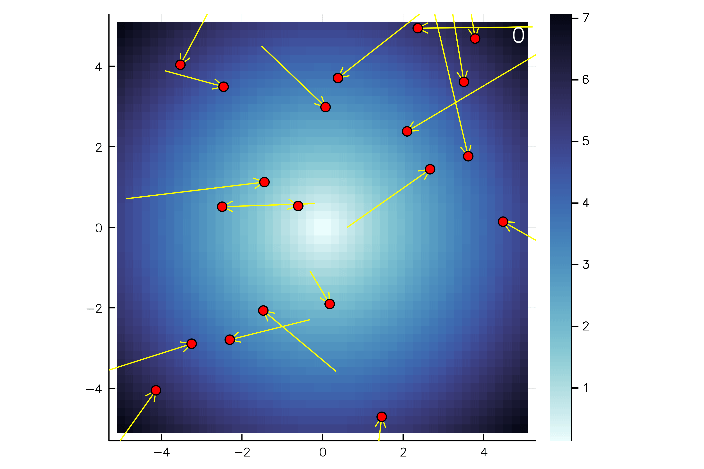

ParticleSwarmOptimizer
The ParticleSwarmOptimizer (PSO) is an optimization algorithm based on the idea of bird flocking or fish schooling. The PSO can also be used for nonlinear and noncontinous functions.

Installation
Pkg.clone("git@github.com:control13/ParticleSwarmOptimizer.jl.git")
Pkg.build("ParticleSwarmOptimizer")simple ussage
import ParticleSwarmOptimizer
const pso = ParticleSwarmOptimizer
objective = pso.Objective(pso.TestFunctions.sphere, 2, (-10.0, 10.0))
neighbours = pso.LocalNeighbourhood(20)
optimizer = pso.PSO(objective, neighbours)
pso.optimize!(optimizer, 10)